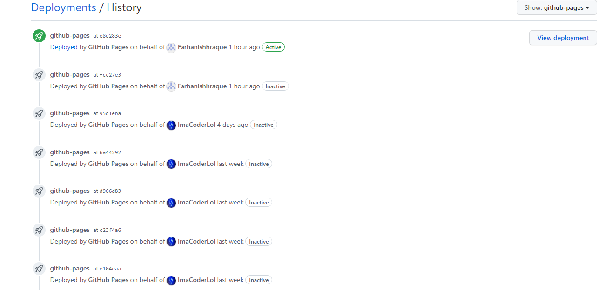

ISP Journals 
Go Back

Github Development Link (Achievements) here
Technical challenges: Only technical challenge we have is getting more Javascript into the
website functionality to make the checkboxes work. We also messed up a bit on the styling
of the website so we might need to work on that. Main goals for next week are to get more
Javascript and fix errors.
Scheduling challenges: Again, we all have challenges staying on task and getting work done
that needs to be finished. Mostly though we are busy with other work or just unfocused
some of the time, so we will need to regain our focus and get small easy tasks to tackle.
Interpersonal challenges: None really except for getting messages across with the team.
Everyone seems to understand but we aren't 100% getting into the project, so we all might
need some motivation and persistance to finish the project
--March 27, 2023--
Github Development Link (Achievements) here
Technical challenges: None since we finally had a big advancement this week in the Github
development, adding big changes to change the website and its functions. Hopefully, we will
be able to keep making even more huge changes to the website and get it ready soon.
Scheduling challenges: We are having trouble again with staying on track and getting more
work done with everyone in the group. We might need to think of a new strategy to get
re-encouraged and motivated to finish the project, and maybe a few group meetings.
Interpersonal challenges: None because everyone gets along well. Only minor issue is
communication and work habits, since everyone is silent with one another most of the
time.
Github Development Link (Achievements) here
Technical challenges: None since we finally had a big advancement this week in the Github
development, adding big changes to change the website and its functions. Hopefully, we will
be able to keep making even more huge changes to the website and get it ready soon.
Scheduling challenges: We are having trouble again with staying on track and getting more
work done with everyone in the group. We might need to think of a new strategy to get
re-encouraged and motivated to finish the project, and maybe a few group meetings.
Interpersonal challenges: None because everyone gets along well. Only minor issue is
communication and work habits, since everyone is silent with one another most of the
time.
--March 20, 2023--
Github Development Link (Achievements) here
Technical challenges: Only real challenges are making really huge advances, since even though
we are on a good pace, we haven't gotten to major changes. We plan on fixing that this week or the
next week, adding huge developments and such.
Scheduling challenges: None at the moment, since we are all on track on the same thing working on
different developments together. We are all also scheduling specific updates to keep track of our
work.
Interpersonal challenges: It's a bit complicated since we are hardworking trying to get whatever we
can done, but we sometimes are a little lazy, so we will need to fix that and get back on track 100%.
Github Development Link (Achievements) here
Technical challenges: Only real challenges are making really huge advances, since even though
we are on a good pace, we haven't gotten to major changes. We plan on fixing that this week or the
next week, adding huge developments and such.
Scheduling challenges: None at the moment, since we are all on track on the same thing working on
different developments together. We are all also scheduling specific updates to keep track of our
work.
Interpersonal challenges: It's a bit complicated since we are hardworking trying to get whatever we
can done, but we sometimes are a little lazy, so we will need to fix that and get back on track 100%.
--March 13, 2023--
Github Development Link (Achievements) here
Technical challenges: We finally got the website working today and it is up and running in
Github today. It is very basic at the moment but later, we plan on adding major updates to the
website and adding functionality later on as well.
Scheduling challenges: Luckily, we are more focused than ever and are on track with working heavily
on the website's functionality. Hopefully we will keep planning effectively and working hard to
advance on the project.
Interpersonal challenges: None whatsoever. We all got along and we were able to plan and work
together on getting the website improved. We are also planning on future improvements and
developments of the project.
Github Development Link (Achievements) here
Technical challenges: We finally got the website working today and it is up and running in
Github today. It is very basic at the moment but later, we plan on adding major updates to the
website and adding functionality later on as well.
Scheduling challenges: Luckily, we are more focused than ever and are on track with working heavily
on the website's functionality. Hopefully we will keep planning effectively and working hard to
advance on the project.
Interpersonal challenges: None whatsoever. We all got along and we were able to plan and work
together on getting the website improved. We are also planning on future improvements and
developments of the project.
--March 6, 2023--
Technical challenges: Still haven't gotten the website to work just yet, but we are getting very
close to getting it working. Hopefully in the next week we might be able to solve the issue.
Scheduling challenges: Only challenges are having to do with getting the website working before
we don't have much time left to work on the project. Again hopefully we'll be able to get it up and
running prior to continuation.
Interpersonal challenges: We all get along pretty well, but in terms of work, no one is really up
for the task because they are either very busy or have important stuff to work on other than the
project. I myself will have to encourage them to work harder so we can get the project done.
Technical challenges: Still haven't gotten the website to work just yet, but we are getting very
close to getting it working. Hopefully in the next week we might be able to solve the issue.
Scheduling challenges: Only challenges are having to do with getting the website working before
we don't have much time left to work on the project. Again hopefully we'll be able to get it up and
running prior to continuation.
Interpersonal challenges: We all get along pretty well, but in terms of work, no one is really up
for the task because they are either very busy or have important stuff to work on other than the
project. I myself will have to encourage them to work harder so we can get the project done.
Technical challenges: Still trying to get the website up and running. We have a local test site
for now but we will try and work together to get the website up and running ASAP.
Scheduling challenges: Scheduling is getting somewhat better, since we try to utilize our time to
the best of our ability, but in the near future we might need to full time.
Interpersonal challenges: No big interpersonal challenges, as everyone gets along, but there are still
a few very minor issues to fix.
--February 20, 2023--
Technical challenges: Not much. Same problems. Didn't do much this week since we had half the week
cut off but we will keep trying to find answers.
Scheduling challenges: Since we have trouble trying to get started much with anything, scheduling has
gone through the roof so from now on we will all have to prioritize and see our main goals and other
issues.
Interpersonal challenges: We still have some trouble checking up on each other but when we need help
we provide each other with it so that's a good start. In the future, we might check up on each other
more just in case.
Technical challenges: Not much. Same problems. Didn't do much this week since we had half the week
cut off but we will keep trying to find answers.
Scheduling challenges: Since we have trouble trying to get started much with anything, scheduling has
gone through the roof so from now on we will all have to prioritize and see our main goals and other
issues.
Interpersonal challenges: We still have some trouble checking up on each other but when we need help
we provide each other with it so that's a good start. In the future, we might check up on each other
more just in case.
Technical challenges: Still trying to learn and research about github and vapor and getting a running
website going. Will keep on researching and get tutoring if I need it.
Scheduling challenges: It is starting to fall short a bit so we plan on get a bit more organized and
check up on our remaining time
Interpersonal challenges: Starting to keep quite but still trying to help each other out. Don't think
we need to change anything for now.
Technical challenges: Encountered same problem with website initialization. Don't really know
where to look, but I did find one or two sources online that might help. So far, we haven't gotten
much done with this backlash. We plan on fixing it by next week, tops.
Scheduling challenges: Same challenge as last week, but we are planning a bit more and
trying to utilize our time more wisely as we are trying to get what we can done. Plan on
having calls and planning during class to get the project done
Interpersonal challenges: None whatsoever, but in fact things got better. I think the only
problem is our ways of communication, so we can improve that slightly. One thing that did get
better was our relationship and courage to work.
Technical challenges: Encountered the same challenges with making the website and starting
with the code this week, and tried asking for help but so far no answers. To further solve the
problem we plan on reaching out to further sources and asking more people to try and find a good
source that will help us achieve our goal.
Scheduling challenges: Same challenges as last week, except it did get a bit better in terms of
working, so the only thing we need to fix is having more planning and utilizing extra time better.
Interpersonal challenges: Didn't really encounter any interpersonal challenges since everyone
now knows each others importance on working.
Technical challenges: Some challenges I encountered this week were starting to make the
website for our code and trying to figure out a good domain to keep it on. We haven't figured
it out yet, but our main goal to fix the problem is to find resources and people who know how
to do it, so we can get a good reference and do it ourselves. We can also try and go to tutoring
and take in extra time to make some more code and set up the website to work on.
Scheduling challenges: Encountered problems with staying on track a bit and trying to cram in
work in short class periods. We also have problems with finding the right times to work on certain
parts of the project which proved to be challenging. We plan to fix this by following our GANTT chart,
making sure we stay on track with checkups, and using effective planning and motivation, and if we have
to, having calls after school to stay on track and have extra time to work.
Interpersonal challenges: Some interpersonal stuff I encountered this week were trying to communicate
effectively to the group about working on the project. To fix this, we plan on helping each other understand
what we have going on and talk ourselves into working on the project.
Technical challenges: Some challenges I encountered this week were getting some issues in
to Github and giving permissions for the coding files for our website. We overcame these
issues by chmodding the code files and pushing them to Github and just adding and configuring
issues in the Github Projects.
Scheduling challenges: Didn't really encounter challenges with time, since we got everything
done so far. I would say the only problem we have is getting on track during the weekend, but
if we all communicate effectiely, we should not have a problem.
Interpersonal challenges: Also didn't encounter any interpersonal challenges with anyone, so
that we got all our work done and finished effectively.I don't see any future isues from here
so we should all be fine.
Technical challenges: Some technical challenges that we encountered were getting Github
integration for the CSAllenISD repository so that we can access it to push our work.
We also had trouble cloning the repository to our terminals for easy access. We overcame
this by using git pull and git config to fix the issue with git clone and we troubleshooted
the permissions for the CSAllenISD repository and we were able to access it after a bit.
Scheduling challenges: We didn't encounter many of these challenges other than how we were
gonna communicate and work to get our project done at home. We fixed this by setting up a
group chat and making sure we were all staying on task and working hard.
Interpersonal challenges: Didn't really encounter interpersonal challenges this week. We all
got along and were checking up on each other and asking for help, so I would say to keep doing that.
Software Engineer: developing the technology for the application. Personally, with enough practice and knowledge, I would fit this role pretty good, and as long as
I overcome challenges like getting to work and debugging. For these challenges, I'll probably refer to my own resources, sources from others, and from the internet. I will also try and keep away distractions and stay focused at all times to fix these issues.
I overcome challenges like getting to work and debugging. For these challenges, I'll probably refer to my own resources, sources from others, and from the internet. I will also try and keep away distractions and stay focused at all times to fix these issues.
QA Engineer: asking questions to check product. I would definitely fit this role, almost like a checker along the way making sure everything is working and in place before execution. Some challenges to this might be when I don't know
how to solve an issue or have too many to solve. To solve this I'll try and find resourceful info on how to fix it or get help from someone else.
how to solve an issue or have too many to solve. To solve this I'll try and find resourceful info on how to fix it or get help from someone else.
Project Manager: Managing the Github and organization and keeping stuff on track. As long as I know what to do with Github, I could fit this role too along with the others, since managing a Github looks pretty easy to do and is very interactive
especially for big projects like ours. Some challenges to encounter with this job would be if stuff wasn;t working and trying to integrate code to share with everyone, but with a few Github Docs and others to help me, I should get through them.
especially for big projects like ours. Some challenges to encounter with this job would be if stuff wasn;t working and trying to integrate code to share with everyone, but with a few Github Docs and others to help me, I should get through them.
Product Manager: Managing how the product will look. This one seems like the easiest, since you don't do much, yet it relies heavy on the person working to get the product out the door and as a final. Some challenges I could face are decision making
and checking for tiny errors, but these should be easy to come by with enough looking.
and checking for tiny errors, but these should be easy to come by with enough looking.
Release Engineer: Managing testing and the release of the product. Same as the last job, this one seems easy to do but also relies heavily on the person to do their job correctly. Some challenges would be obviously debugging and deciding a good
release on the product. To get through these challenges, I would have to be very vigalent and watchful during testing and to think very efficiently, or get help when I most need it.
release on the product. To get through these challenges, I would have to be very vigalent and watchful during testing and to think very efficiently, or get help when I most need it.